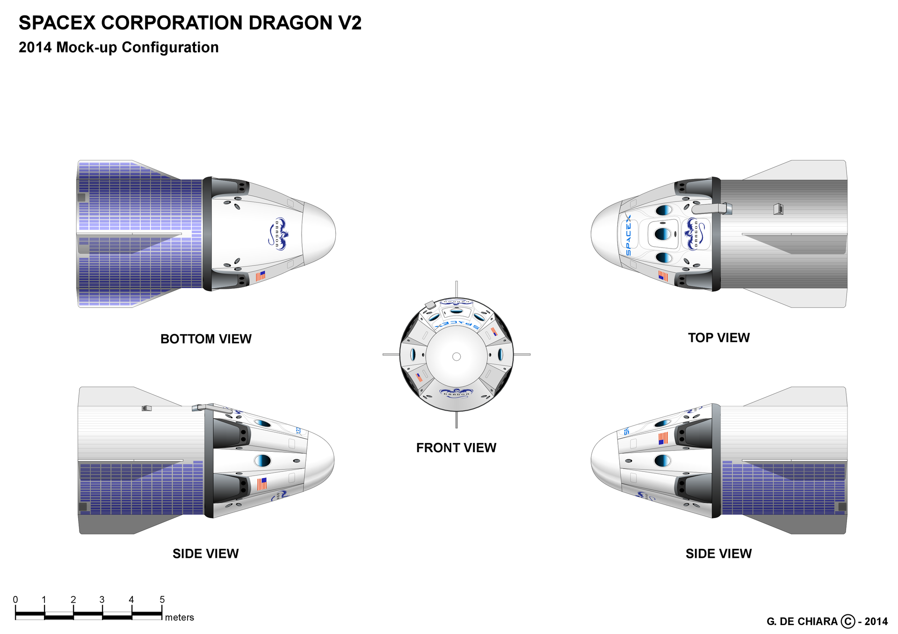

Overview
Dragon Vehicle Overview:
-
 Dragon is a free-flying spacecraft designed to deliver both cargo and people to orbiting destinations. Dragon made history in 2012 when it became the first
commercial spacecraft in history to deliver cargo to the International Space Station and safely return cargo to Earth, a feat previously achieved only by governments. It is the only spacecraft currently flying that is capable of returning
significant amounts of cargo to Earth. Currently Dragon carries cargo to space, but it was designed from the beginning to carry humans. Under an agreement with NASA, SpaceX is now developing the refinements that will enable Dragon
to fly crew. Dragon's first manned test flight is expected to take place as early as 2018.
Configurations:
-
Cargo - Resupply the Space Station
-
DELIVERY AND RETURN SERVICES - Dragon is the first commercial spacecraft to deliver cargo to the International Space Station and currently the only cargo spacecraft flying capable of returning significant amounts of cargo to Earth. Dragon accommodates
pressurized cargo in the capsule as well as unpressurized cargo in its trunk.
-
VERSATILE CARGO RACKS - The racks are a honeycomb carbon-aluminum construction designed for efficient packing in a zero-gravity environment. They accommodate a variety of standard-size NASA cargo bags as well as freezers for carrying materials such as
biological samples.
-
Crew - Taking Humans into Space
-
PARTNERSHIP WITH NASA - Dragon was designed from the outset to fly humans to space. Under an agreement with NASA, SpaceX is making upgrades to Dragon to allow for crew carrying capability.
-
CREW UPGRADES - Dragon will be the world’s safest and most reliable crew transport vehicle, with seating for seven, life-support systems, controls with manual capability, and a powered launch escape system.
-
FIRST LAUNCH - Upgrades to Dragon are currently in progress. Dragon’s first manned test flight is expected to take place as early as 2018.
-
Dragon Lab - A FREE-FLYING MICROGRAVITY LABORATORY
-
FACILITATING RESEARCH - DragonLab is a free-flying, unmanned platform designed for research and testing in a microgravity environment independent of the International Space Station. Dragon accommodates pressurized cargo in the capsule as well as unpressurized
cargo in its trunk.
-
LONGEVITY - It can transport payloads, experiments, instruments, and sensors into space and back to Earth on missions ranging from one week to two years.
-
CAPABILITIES - DragonLab can readily accommodate instrument and sensor testing, space physics and relativity experiments, radiation effects research, and many other microgravity tests.